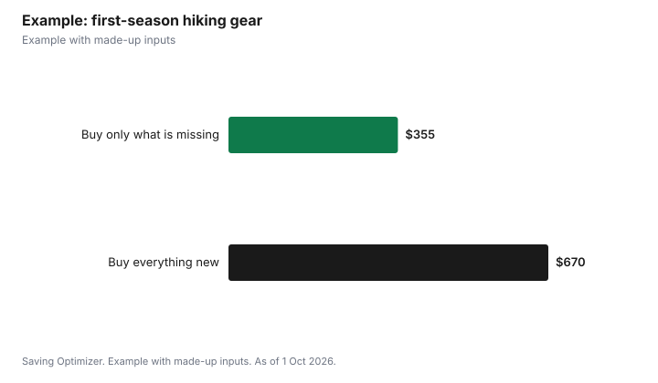

Sports · Canada
Hiking Gear on a Budget in Canada: What to Buy First

A beginner can start hiking in Canada for little money because most of what you need is already at home. AdventureSmart, the national search and rescue prevention program, lists ten essentials for every trip, from a flashlight and whistle to extra food, water and clothing, and many of them cost a few dollars or come from a kitchen drawer. Put most of your budget into footwear that fits and a layering system that keeps you dry, since cold and wet are what turn a short walk into a rescue. Then add trail costs: Parks Canada charges daily admission at places like Banff ($12.25 per adult in 2026), and an $83.50 Discovery Pass covers a year of national park visits for one adult. Buy the rest slowly, after you know which trails you actually hike.
Key takeaways
- AdventureSmart's ten essentials fit in a small daypack and mostly cost little.
- Spend first on footwear and a rain and wind shell; borrow or reuse the rest.
- Leave a trip plan with someone every time; it is free and it is how searches start.
- Parks Canada: $12.25 daily adult admission at Banff; Discovery Pass $83.50 adult, youth 17 and under free.
- Example with made-up inputs: a first-season budget under $400.
The ten essentials and what they cost
AdventureSmart says these are the basic survival items to carry on any outdoor trip, whether it lasts a few hours or several days. They are separate from activity gear like skis or a tent. The cost column shows how most beginners handle each one; the dollar amounts are not quoted from any store.
| Essential | What AdventureSmart says | Budget approach |
|---|---|---|
| Flashlight | Flashlight or headlamp with spare batteries | Use a headlamp; a phone light drains the battery you need for calls |
| Fire-making kit | Waterproof matches or lighter, fire starter or candle | Lighter and a candle stub in a zip bag |
| Signalling device | Whistle or mirror | A plastic whistle costs little; many packs have one on the strap |
| Extra food and water | 1 litre of water per person extra | Reuse bottles; pack bars or nuts from home |
| Extra clothing | Rain, wind, water protection and a toque | Use what you own first; buy a shell if you have none |
| Navigation and communication | At minimum a map and compass; charged phone or GPS | Print a free trail map; carry a charged phone and a backup battery |
| First aid kit | Know how to use it | Build one from household supplies |
| Emergency shelter | Orange tarp or emergency shelter | An emergency blanket or orange tarp |
| Pocket knife | For shelter, fire and repairs | Any small folding knife |
| Sun protection | Glasses, sunscreen and a hat | Use what you have |
Where to spend: feet and layers
AdventureSmart recommends dressing in layers: a base layer that moves sweat away from your skin, a mid layer that insulates, and an outer layer that blocks wind and rain. It notes that synthetics such as polypropylene and polyester absorb little water and dry quickly, and that wool and synthetics insulate because their fibres trap air. Cotton is the item many hikers learn to leave at home, because damp clothing draws heat away from the body even above freezing. You likely own a synthetic gym shirt and a fleece already; the purchase most beginners need is a rain shell. For footwear, AdventureSmart says the right shoes protect against rocks and roots and support your ankles. Trail runners or light hiking shoes work for many day hikes on maintained trails; heavier boots matter more with a heavy pack or rough terrain. Fit matters more than brand, so try shoes late in the day with the socks you will hike in.
Where to save
- Daypack: a school backpack works for short hikes. Upgrade when you know you need a hip belt or more volume.
- Poles: optional for most day hikes; borrow a pair to see if you like them.
- Water: a reusable bottle is enough; a filter matters only when you rely on streams.
- Navigation: printed maps from the park or trail organization are usually free; learn the compass before buying a GPS unit.
- Used gear: packs, poles and shells often show up second-hand. Inspect zippers, seams and waterproof coatings, and check that boots are not worn through at the heel.
- Rentals: outdoor stores and some clubs rent gear such as packs and snowshoes, which lets you try before buying.
Trail and park costs
Many municipal, conservation authority and provincial trails are free or charge parking. Parks Canada charges admission at many national parks. In 2026, Banff daily admission is $12.25 per adult aged 18 to 64, $10.75 per senior and $24.50 for a family or group of up to seven people in one vehicle; youth 17 and under are free. The annual Discovery Pass is $83.50 per adult or $167.50 for a family or group of up to seven in one vehicle and is valid for 12 months. For one adult, seven Banff days at $12.25 cost $85.75, which is about the price of the pass. Fees differ at other parks, so check each park's fee page.
Safety costs nothing
AdventureSmart's Three Ts are trip planning, training and taking the essentials. Fill out a trip plan that says who is going, when you will be back, where you are going and how you are getting there, and leave it with someone you trust. The program explains that searches start from the plan, and its online trip plan tool is free. It also advises checking the weather, knowing the terrain, staying within your limits, and not relying only on electronics, since batteries die and reception drops. If you get lost, its advice is to stop, think, observe and plan, stay put, and use a whistle; three blasts is a distress signal.
Example with made-up inputs
These numbers are an example with made-up inputs. Priya wants to hike about a dozen day trips next season. She already owns a backpack, a fleece, a synthetic T-shirt, sunglasses, sunscreen and a water bottle. She buys trail shoes for a made-up $140, a rain shell for $120, a headlamp for $30, a whistle, lighter and emergency blanket for $20, first aid supplies for $25 and a compass for $20, totalling $355. Buying everything new, including a $120 pack, $90 fleece, $40 base layer, $30 bottle, $25 sunglasses and $10 sunscreen, would bring the total to about $670. She adds two Banff days at $12.25 each; at that rate the pass would not pay off.
| Item | Buy only what is missing | Buy everything new |
|---|---|---|
| Footwear | $140 | $140 |
| Rain shell | $120 | $120 |
| Headlamp, whistle, fire kit, blanket | $50 | $50 |
| First aid and compass | $45 | $45 |
| Pack, fleece, base layer, bottle, sun gear | $0 (already owned) | $315 |
| Total | $355 | $670 |

Steps
- Lay out what you already own against the ten essentials.
- Buy footwear that fits and a rain and wind shell if you lack one.
- Fill the gaps with inexpensive items: headlamp, whistle, emergency blanket.
- Print a map and learn the compass on an easy trail.
- Fill out a trip plan for every hike.
- After a season, upgrade the one item that bothered you most.
Common mistakes
- Buying a full kit before knowing what hikes you like.
- Wearing cotton on cool or wet days.
- Leaving the essentials in the car on a short hike.
- Relying on a phone for light, navigation and calls at once.
- Not telling anyone where you went.
Related: the Discovery Pass and snowshoeing on a budget.
Sources
- AdventureSmart, The Three Ts (trip planning, training, taking the essentials) and The Essentials, adventuresmart.ca, as of 1 Oct 2026.
- Parks Canada, Banff National Park fees and Passes, permits and fees, parks.canada.ca, as of 1 Oct 2026. 2026 Discovery Pass $83.50 adult, $167.50 family or group; youth 17 and under free.
- Gear prices in the example are made-up inputs, not quotes from any store.
Frequently asked questions
What are the ten essentials for hiking in Canada?
AdventureSmart lists a flashlight, fire-making kit, signalling device, extra food and water, extra clothing, navigation and communication aids, first aid kit, emergency shelter, pocket knife and sun protection.
How much water should I carry extra?
AdventureSmart suggests extra water of about 1 litre per person, on top of what you plan to drink.
What hiking gear should I buy first?
Footwear that fits and a rain and wind shell, because staying dry and stable matters most. Many other essentials are inexpensive or already at home.
Do I need hiking boots?
Not always. AdventureSmart says footwear should protect your feet and support your ankles; trail shoes suit many maintained trails, and boots help more with heavy packs or rough ground.
How much does it cost to enter Banff National Park?
In 2026, daily admission is $12.25 per adult, $10.75 per senior and $24.50 per family or group. Youth 17 and under are free.
Is a trip plan really necessary?
Yes. AdventureSmart says searches start from the trip plan you leave with someone, and its online trip plan tool is free.
Researched and drafted with AI assistance and fact-checked against official Canadian sources. How we create content.
Disclosure: Saving Optimizer may earn a commission if a partner link is added later. No partnership is claimed on this page. Education only.